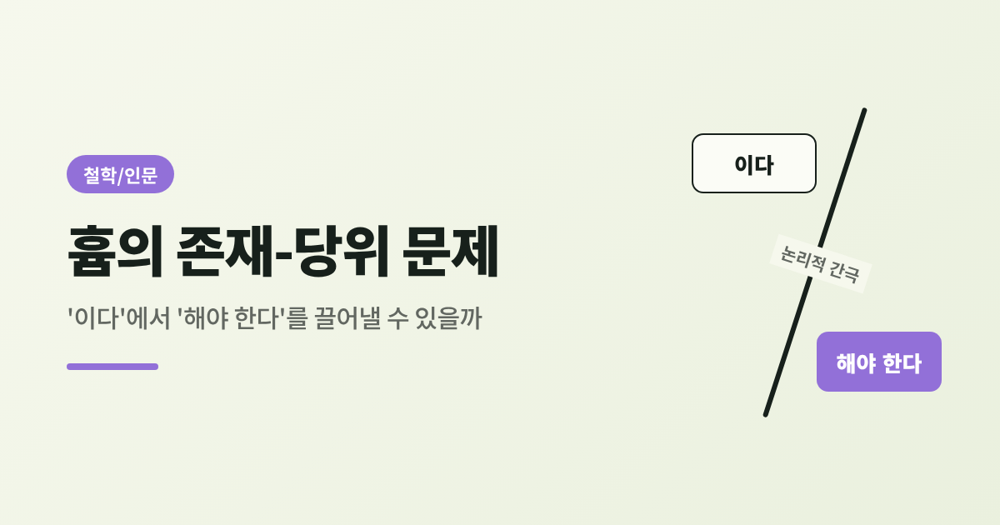
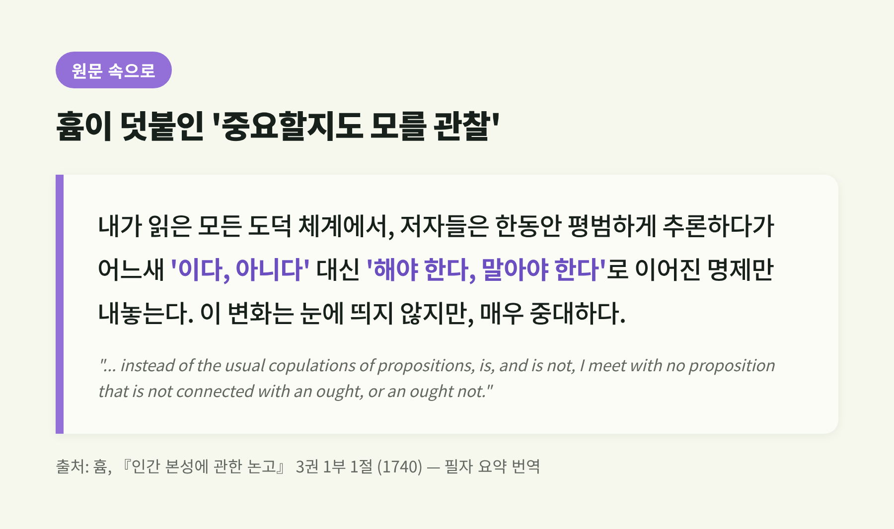
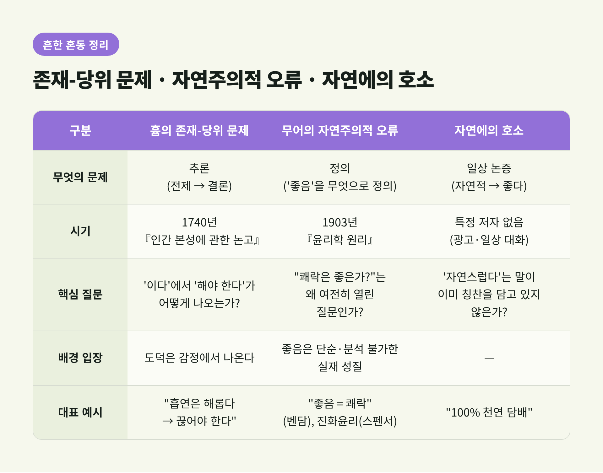

흄의 존재-당위 문제 — '이다'에서 '해야 한다'를 끌어낼 수 있을까

이번 글에서는 흔히 '흄의 단두대'라고 부르는 존재-당위 문제를 정리해 보겠습니다. 사실을 아무리 쌓아도 '해야 한다'는 결론이 저절로 나오지는 않는다는 문제입니다. 원문의 맥락부터 대표적인 반론, 그리고 우리가 일상에서 이 문제를 어떻게 마주치는지까지 차례로 살펴봅니다.
세 줄 요약
- 흄은 1740년 『인간 본성에 관한 논고』 3권에서, 도덕 이론들이 '이다'에서 '해야 한다'로 슬쩍 넘어간다고 지적했습니다.
- 이 지적은 무어의 '자연주의적 오류'와 자주 섞이지만, 하나는 추론의 문제이고 다른 하나는 정의의 문제입니다.
- 설·풋·매킨타이어·해리스가 간극을 메우려 했고, 흄이 정말 그런 추론을 '금지'했는지도 아직 논쟁 중입니다.
■ 한 단락짜리 '덧붙임'에서 시작된 문제
데이비드 흄의 『인간 본성에 관한 논고』는 두 번에 나뉘어 나왔습니다. 1·2권은 1739년 1월, 도덕을 다룬 3권은 1740년 10월에 출간되었습니다. 흄이 20대 초반에 쓴 책이었고, 반응은 냉담했습니다. 그 자신이 "인쇄기에서 사산되었다"고 회고했을 정도입니다.
문제의 대목은 3권 1부 1절, 「도덕적 구별은 이성에서 나오지 않는다」의 마지막 단락입니다. 흄은 이 절 내내 이성만으로는 덕과 악덕을 가려낼 수 없다고 논증합니다. 그리고 끝에 "어쩌면 중요하다고 여겨질 관찰 하나를 덧붙이지 않을 수 없다"며 이렇게 씁니다.

내용을 풀면 이렇습니다. 그가 읽은 도덕 체계의 저자들은 한동안 평범하게 추론합니다. 신의 존재를 세우기도 하고, 인간사에 관해 관찰하기도 합니다. 그런데 어느 순간 '~이다, ~아니다'로 맺던 명제가 모두 '~해야 한다, ~말아야 한다'로 바뀌어 있다는 것입니다.
흄은 이 변화가 눈에 띄지 않지만 매우 중대하다고 말합니다. 전혀 다른 관계에서 어떻게 이 새로운 관계가 연역되는지, 설명이 있어야 한다는 것이지요. 이 점에 주의하면 "통속적인 도덕 체계들"이 무너질 것이라고 덧붙이고, 덕과 악덕의 구별은 대상들의 관계에만 근거하지도, 이성으로 지각되지도 않는다고 결론짓습니다.
맥락을 놓치지 않는 것이 중요합니다. 이 단락은 독립된 논문이 아니라, 도덕은 이성이 아닌 감정에서 나온다는 큰 논증에 붙인 덧붙임입니다. 바로 다음 절의 제목이 「도덕적 구별은 도덕 감정에서 나온다」입니다.
■ '논리적 간극'이란 정확히 무엇인가
20세기에 이 대목은 하나의 원칙으로 굳어졌습니다. R. M. 헤어는 이를 '흄의 법칙'이라 불렀습니다. 순수하게 사실을 서술하는 전제만으로는 윤리적 결론을 이끌어낼 수 없다는 테제입니다. '흄의 단두대'라는 별명은 '이다'와 '해야 한다'를 단칼에 잘라낸다는 이미지에서 왔고, 맥스 블랙의 1964년 논문 「'이다'와 '해야 한다' 사이의 간극」과 함께 흔히 소개됩니다.
논리로 옮기면 단순합니다. 타당한 연역에서 결론은 전제에 없던 것을 새로 담을 수 없습니다. 전제 어디에도 '해야 한다'가 없다면, 결론에도 '해야 한다'가 나타날 수 없습니다.
일상의 예로 보면 감이 옵니다. "흡연은 건강을 해친다. 그러므로 담배를 끊어야 한다." 자연스럽게 들리지만, 사이에 "건강을 해치는 일은 피해야 한다"는 전제가 숨어 있습니다. 흄의 지적은 그런 추론이 틀렸다는 것이 아니라, 숨은 다리를 드러내 보라는 요구에 가깝습니다.
물론 반례도 일찍부터 나왔습니다. 철학자 A. N. 프라이어는 "그는 선장이다"에서 "그는 선장이 해야 할 일을 해야 한다"가 따라 나온다고 지적했습니다. 이런 반례가 정말 간극을 넘은 것인지는 이후 논쟁의 한 축이 됩니다.
■ 무어의 '자연주의적 오류'와는 다른 이야기
가장 흔한 혼동은 흄의 문제를 G. E. 무어의 '자연주의적 오류'와 같은 것으로 여기는 일입니다. 두 개념은 닮았지만 출발점이 다릅니다.
무어는 1903년 『윤리학 원리』에서 '좋음'은 단순하고 분석할 수 없는 성질이라고 주장했습니다. '좋음'을 쾌락 같은 다른 성질과 같다고 정의하는 것을 그는 자연주의적 오류라 불렀습니다. 쾌락주의자 벤담, 진화윤리학자 스펜서가 대표적 표적이었습니다. 흥미롭게도 무어는 형이상학적 성질로 좋음을 정의한 T. H. 그린에게도 같은 비판을 적용했습니다.
이를 뒷받침하는 것이 '열린 질문 논증'입니다. 좋음이 곧 쾌락이라면 "쾌락은 좋은가?"는 "쾌락은 쾌락인가?"처럼 답이 뻔한 질문이어야 합니다. 그런데 실제로는 여전히 의미 있게 열려 있습니다. "즐겁지만 좋지는 않다"는 말도 자기모순이 아닙니다.

정리하면 이렇습니다. 흄의 문제는 추론의 문제입니다. 전제에서 결론으로 넘어가는 이행이 정당한가를 묻습니다. 무어의 문제는 정의의 문제입니다. '좋음'이라는 개념을 다른 무엇으로 바꿔 쓸 수 있는가를 묻습니다. 게다가 무어는 좋음이 실재하는 성질이라고 본 반면, 흄은 도덕이 감정에서 나온다고 보았습니다. 스탠퍼드 철학 백과사전도 무어의 논증을 흄의 존재-당위 문제로 제시하지 않으며, 둘을 잇는 설명은 훗날 비인지주의자들의 것이라고 짚습니다.
■ 존 설의 반론 — 약속은 사실인가, 당위인가
간극을 정면으로 넘으려 한 대표 시도는 존 설의 1964년 논문 「'이다'에서 '해야 한다'를 끌어내는 법」입니다. 『철학 리뷰(The Philosophical Review)』 73권에 실렸습니다. 설은 '약속'이라는 평범한 사건을 골랐습니다.
설의 출발점은 누구나 확인할 수 있는 사실입니다. 존스가 "스미스, 당신에게 5달러를 지불할 것을 이로써 약속합니다"라고 말했습니다. 특정 조건에서 이 말을 하는 것은 곧 약속입니다. 약속한다는 것은 정의상 의무를 떠맡는 일이고, 의무가 있다면 그것을 해야 합니다. 그러니 존스는 5달러를 지불해야 한다는 것입니다.
열쇠는 '제도적 사실'이라는 개념입니다. 돌이 떨어지는 것은 날 것의 사실이지만, 약속이나 돈, 결혼은 "X는 맥락 C에서 Y로 간주된다"는 구성적 규칙 안에서만 존재합니다. 설은 이런 사실에는 처음부터 의무가 얽혀 있다고 보았고, 이 생각을 1995년 『사회적 실재의 구성』에서 크게 발전시킵니다.
반론도 곧바로 나왔습니다. 헤어는 같은 해 「약속 게임」에서, 약속하면 의무가 생긴다는 규칙은 동어반복이 아니라 하나의 도덕 원리라고 반박했습니다. 야구 규칙이 "경기를 어떻게 하는지, 혹은 어떻게 해야 하는지"를 말하듯이 말입니다. 그 규칙을 받아들이지 않는 사람도 '약속'이라는 단어를 모순 없이 쓸 수 있습니다. 경험적으로만 읽으면 결론은 "사람들이 그렇게 여긴다"는 관찰에 그친다는 지적입니다.
설을 옹호하는 쪽도 있습니다. 2013년 힌드릭스는 제도를 '수용'하는 것과 '지지'하는 것을 구분하면, 평가적 전제를 몰래 넣지 않고도 논증이 성립한다고 주장했습니다. 반면 약속의 구속력은 결국 별도의 도덕 원리에서 나온다는 비판도 이어졌습니다. 이 논쟁은 지금도 끝나지 않았습니다.
■ 필리파 풋과 매킨타이어 — 덕 윤리의 응답
덕 윤리 쪽은 다른 길을 택했습니다. 간극을 건너는 다리를 놓기보다, 애초에 사실과 가치가 그렇게 깔끔하게 갈라지는지를 의심한 것입니다.
필리파 풋은 1958~59년의 논문들에서 개인의 태도가 판단을 도덕적으로 만든다는 견해를 비판했습니다. 그녀가 든 예는 자부심입니다. 자부심에는 알맞은 대상이 필요해서, 아무것에나 자부심을 느낄 수는 없습니다. 감정조차 사실에 논리적으로 묶여 있다는 것입니다. '부상'이라는 말도 비슷합니다. 손이나 눈의 기능을 해치는 일은 누구에게나 피할 이유가 됩니다.
2001년 『자연적 좋음』에서 풋은 이 생각을 생명 전체로 넓힙니다. 고사리는 잘못 자랄 수 있지만 쓰레기 더미는 그럴 수 없습니다. 생명체는 그 종의 삶의 형태를 배경으로 평가되기 때문입니다. 풋은 인간 행위의 평가 역시 "특유하게 인간적인 삶의 본질적 특징"에 달려 있다고 보았습니다. 다만 인간의 좋음을 생존이나 번식으로 환원하지는 않았습니다. 인간의 좋음은 식물이나 동물의 좋음과 같지 않다고 분명히 적었습니다.
알래스데어 매킨타이어는 1981년 『덕의 상실』에서 더 일상적인 예를 듭니다. "이 시계는 시간이 심하게 부정확하고, 들고 다니기에 너무 무겁다." 여기서 "이것은 나쁜 시계다"가 타당하게 따라 나온다고 말합니다. "그는 이 지역 어떤 농부보다 에이커당 수확량이 많다"에서 "그는 좋은 농부다"가 나오는 것도 마찬가지입니다.
비결은 '기능 개념'에 있습니다. 시계가 무엇인지를 알려면 좋은 시계가 무엇인지 알아야 합니다. 두 기준은 서로 떨어져 있지 않습니다. 아리스토텔레스 전통에서는 '인간'도 그런 기능 개념이었습니다. 매킨타이어의 진단은, 근대가 인간의 목적이라는 개념을 버리면서 '이다'에서 '해야 한다'로 가는 길이 막힌 것처럼 보이게 되었다는 것입니다.
한계도 지적됩니다. '시계'를 그저 휴대용 시간 측정기로 정의하면 나쁜 시계도 시계이고, 결국 '좋은'이라는 평가가 전제에 몰래 들어간 것이라는 비판입니다. 또 시계와 달리, 인간에게 정해진 기능이 있다는 데 동의하지 않는 사람에게는 설득력이 약해집니다.
■ 과학이 도덕을 정할 수 있을까 — 진화윤리와 샘 해리스
존재-당위 문제가 가장 뜨겁게 부딪치는 곳은 과학과 윤리의 경계입니다.
19세기 말 허버트 스펜서는 진화의 원리를 사회에 적용해 자유방임을 옹호했습니다. 그의 친구 토머스 헉슬리는 1893년 강연 「진화와 윤리」에서 정반대로 말했습니다. 사회의 윤리적 진보는 자연의 과정을 모방하는 데 있지 않고, 그것과 싸우는 데 있다는 것입니다. '가장 잘 살아남는 것'과 '가장 좋은 것'을 같은 것으로 여기는 데 오류가 있다고 보았습니다.
예전에는 진화가 도덕의 근거라고 주장하는 쪽이 있었다면, 지금은 뇌과학과 심리학이 그 자리를 이어받았습니다. 샘 해리스는 2010년 『도덕의 풍경』에서 도덕은 의식 있는 존재의 안녕에 관한 것이고, 따라서 과학이 도덕적 질문에 객관적 답을 줄 수 있다고 주장했습니다. 그는 존재와 당위의 구분 자체를 받아들이지 않았습니다.
해리스는 2013년 8월 공개 도전을 내걸었습니다. 1,000단어 이내로 책의 핵심 논증을 반박하라는 것이었습니다. 최우수 글에는 2,000달러, 자신을 실제로 설득하면 20,000달러를 주고 공개적으로 입장을 철회하겠다고 했습니다. 심사는 철학자 러셀 블랙포드가 맡았고, 2014년 5월 라이언 본의 글이 뽑혔습니다.
본의 요지는 이렇습니다. 과학은 안녕이 최고의 가치라는 것도, 우리가 그것을 극대화해야 한다는 것도 경험적으로 입증할 수 없다는 것입니다. 의학이 건강을 좋은 것으로 전제하는 것과 달리, 윤리에는 경쟁하는 이론들이 있어 그런 전제가 당연하지 않다는 지적도 덧붙였습니다.
해리스는 설득되지 않았습니다. 그는 "모두에게 가능한 최악의 고통은 가장 큰 행복보다 정말로 나쁘다"는 것을 더 이상 증명할 필요 없는 기본 직관으로 두었습니다. 과학도 논리로 논리를 정당화하지는 못한다는 것이 그의 반박이었습니다. 콰메 앤서니 애피아, H. 앨런 오어 같은 비평가들은 그가 과학이 가치를 어떻게 결정하는지 보여주지 못했다고 비판했습니다.
양쪽 모두 일리가 있습니다. 사실은 무엇이 고통을 줄이는지 알려주는 데 분명 강력합니다. 다만 고통을 줄이는 것이 왜 최우선이어야 하는지는, 결국 누군가 받아들여야 하는 출발점으로 남습니다.
■ "자연스러운 것이 옳다"는 말을 들을 때
이 문제는 강의실 밖에서 더 자주 등장합니다. "천연이니까 몸에 좋다", "본능이니까 어쩔 수 없다", "부자연스러우니 잘못이다" 같은 말들입니다. 이것을 '자연에의 호소'라고 부릅니다.
어떤 담배 광고는 "100% 천연 담배"를 내세웠습니다. 하지만 담배의 발암물질도 천연 성분입니다. 독초는 자연적이지만 먹어서는 안 되고, 자전거 타기나 양치질은 부자연스럽지만 나쁘지 않습니다. '자연스럽다'는 말 자체가 이미 칭찬을 품고 있어서, 결론을 미리 전제하는 셈이 되기 쉽습니다.
참고로 자연에의 호소를 '자연주의적 오류'라고 부르는 경우가 많지만, 엄밀히는 다릅니다. 무어의 오류는 정의의 문제이고, 자연에의 호소는 논증의 문제입니다. 어느 쪽이든 쓸모 있는 질문은 하나입니다. "사실과 결론 사이에 어떤 '해야 한다'가 숨어 있는가?"
물론 '자연스러운 쪽'이 경험칙으로 맞을 때도 있습니다. 식단이나 생활습관처럼 말이지요. 그러나 그것은 반증 앞에서 물러설 수 있는 추정일 뿐, 결론을 보증하지는 않습니다.
■ 흄은 정말 '금지'했을까 — 해석 논쟁
마지막으로 짚을 것은, 흄 자신이 무엇을 말하려 했느냐입니다. 놀랍게도 이 점부터 합의가 없습니다.
20세기 중반까지는 흄이 사실에서 당위로 가는 추론을 금지했다는 '흄의 법칙' 해석이 표준이었습니다. 그런데 매킨타이어는 1959년 논문에서 반문했습니다. 흄 자신도 『도덕 원리 탐구』에서 '수도사적 덕'을 비판할 때, 사실 전제로부터 당위 결론을 끌어내고 있지 않느냐는 것입니다.
이후 해석은 여러 갈래로 나뉘었습니다. 흄은 어려움을 제기했을 뿐 스스로 그것을 넘어선다는 '흄의 도전' 해석이 있습니다. 아네트 베이어 등이 이 편에 섭니다. 연역적 추론만 배제했다는 '논리 법칙' 해석도 있습니다. 앤터니 플루, J. L. 매키, 찰스 피그든 등이 대표적입니다. 반대로, 연역이든 개연적 추론이든 모두 막았다는 더 강한 해석을 내놓는 연구자도 있습니다.
스탠퍼드 철학 백과사전의 정리도 비슷합니다. 금지로 읽으면, 흄이 어떤 사실 명제도 평가적이지 않다고 논증 없이 가정한 셈이 됩니다. 좁게 읽으면, 이 대목은 이성만으로는 덕과 악덕을 처음 발견할 수 없다는 주장일 수 있습니다. 그 경우 도덕 개념이 일단 감정을 통해 갖춰진 뒤에는, 사실로부터 도덕적 결론을 추론하는 일이 가능해집니다.
어느 해석이 맞는지는 판단을 보류하겠습니다. 다만 원문을 다시 읽으면, 흄이 "설명이 주어져야 한다"고 요구했다는 점만은 분명합니다.
정리하면 이렇습니다. 흄의 한 단락은 '이다'와 '해야 한다' 사이에 무엇이 있는지 묻게 만들었습니다. 설은 제도에서, 풋은 생명의 형식에서, 매킨타이어는 기능에서, 해리스는 안녕의 과학에서 답을 찾았습니다. 누구도 완전히 이기지는 못했지만, 그 덕분에 우리는 숨은 전제를 찾아내는 법을 배웠습니다.
— 사실은 길을 비추지만, 어디로 갈지는 대신 정해 주지 않습니다.
흄의 단두대가 아직 유효하냐고 물으신다면, 칼날보다는 질문으로서 여전히 살아 있다고 답하겠습니다.
참고자료
- David Hume, A Treatise of Human Nature, 3.1.1 (Standard Ebooks)
- Stanford Encyclopedia of Philosophy, "Hume's Moral Philosophy"
- Wikipedia, "Is–ought problem"
- EBSCO Research Starters, "Hume Publishes A Treatise of Human Nature"
- Hsueh Qu, "Laying Down Hume's Law" (PhilArchive)
- Stanford Encyclopedia of Philosophy, "Moore's Moral Philosophy"
- Fallacy Files, "Appeal to Nature"
- PhilArchive, Searle 1964 논증 비판 논문
- R. M. Hare, "The Promising Game"(1964) 번역본, Etyka
- F. Hindriks, "Collective Acceptance and the Is-Ought Argument", Ethical Theory and Moral Practice (2013)
- Stanford Encyclopedia of Philosophy, "Philippa Foot"
- "MacIntyre on the Is-Ought Problem" (After Virtue 인용)
- William F. Vallicella, "After MacIntyre: On Deriving 'Ought' from 'Is'"
- Sam Harris, "The Moral Landscape Challenge" (2014)
- Sam Harris, "Clarifying the Landscape" (2014)
- "The Moral Landscape" (Wikipedia 미러)
- The New Atlantis, "Evolution and Ethics, Revisited"